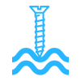

Прочность
Пределы прочности на изгиб, сжатие, продольную и поперечную деформацию на 30-50% выше аналогичных показателей классического гладкого профиля. Помимо прочности, это так же упрощает транспортировку и хранение. Не критичные механические воздействия (царапины, следы штабелирования, потертости при транспортировке) не вредят товарному виду профиля.
Легкость монтажа
Стоечный профиль удерживается в направляющем по принципу «шип-паз» без проскальзывания. Облегчается процесс наращивания, при монтаже нет необходимости в просечке и фиксации. При необходимости изменения конфигурации конструкции во время монтажа, не требуется действий по сборке.
Экономия времени
За счет фиксации профиля по принципу «шип-паз», нет необходимости делать просечку и фиксацию, наращивание профилей производиться без применения шурупов. Поэтому монтажники могут свести к минимуму количество повторяющих операций и минимизировать временные потери пи монтаже. Экономия времени на монтаже межкомнатной перегородки в среднем 35%.

Простота засверливания
Благодаря рельефной поверхности профиля PREMIUM STEEL®, винт-саморез одинаково легко засверливается без соскальзывания в любую точку профиля с возможностью угла отклонения до 450. Гладкий профиль, имеет только ввинчивания ограниченные высечками или канавками.
Надежность и долговечность
Соединения профиль PREMIUM STEEL®, обладает увеличенной на 30% площадью резьбового соединения винта самореза с металлом, что обеспечивает улучшение характеристик удержания. Устойчивость профиля «на срыв» винта (шурупа) выше на 40% в отличие от гладкого профиля.
Звукоизоляция
Благодаря волновой структуре профиля, гасящей звуковые колебания, гипсокартонные конструкции, собранные с применением профиля PREMIUM STEEL®, обладают большей звукоизоляцией. Профили PREMIUM STEEL®, менее подвержены эффеку резонанса. Разница особенно заметна в помещениях, где работают электродвигатели малой и средней мощности — швейные машины, сверлильное, фрезерное, распиловочное оборудование.
Экономия средств
Соединения профиль PREMIUM STEEL®, обладает увеличенной на 30% площадью резьбового соединения винта самореза с металлом, что обеспечивает улучшение характеристик удержания. Устойчивость профиля «на срыв» винта (шурупа) выше на 40% в отличие от гладкого профиля.
Интернет магазин Розетка™
Вас интересует бытовая техника, компьютеры, софт или товары для активного отдыха? Все это вы можете купить прямо сейчас, сэкономив уйму времени! Интернет-магазин Rozetka™ с радостью поможет вам избежать необходимости посещать десятки магазинов. Вы можете заказать любой товар, не вставая со своего кресла, а наш курьер вовремя доставит покупку по указанному адресу. Интернет магазин (Украина) Rozetka™ действует на территории всей страны. Жители любых городов могут без лишних хлопот посетить наш интернет-магазин (Харьков, Киев и другие города).
Вне зависимости от того, где вы находитесь на данный момент, вы сможете заказать товар, что, согласитесь, очень удобно. Какие же преимущества предлагает наш интернет-магазин электроники, телефонов и прочих товаров? Наиболее существенный факт – наличие тысяч позиций, которые гарантированно имеются на складе. Вы сможете посетить наш интернет магазин и купить любые товары по невысокой цене. Вам необходим холодильник, стиральная машина или микроволновая печь?
Интернет магазин бытовой техники (Киев, Харьков) поможет вам. Наличие множества решений позволит подобрать устройство с требуемыми характеристиками и стоимостью. Интернет-магазин техники (Харьков, Днепропетровск) Rozetka – это многообразие предложений на любой вкус. Чтобы заказать товар, вам не придется никуда ехать или идти, т.к. все операции совершаются в виртуальном режиме. Именно поэтому Rozetka – это интернет-магазин телевизоров, холодильников и иной техники, покупать в котором выгодно и приятно.
Нередко случается и так, что нам необходимо срочно купить сотовый телефон при потере собственного аппарата, или же чтобы порадовать близкого человека приятным подарком. В этом случае вам достаточно обратиться в интернет-магазин мобильных телефонов Rozetka™. Сотни моделей от ведущих мировых производителей предлагаются вашему вниманию. Заказ мобильных телефонов в нашем интернет-магазине можно произвести из любого города (Киев, Харьков, Одесса и т.д.), даже не выходя из дома. Это снимет с ваших плеч массу проблем, и позволит вовремя получить средство связи, без которого крайне трудно обойтись в наши дни.
И, конечно, нельзя забывать о компьютерах, ноутбуках и периферийных устройствах. Интернет-магазин ноутбуков Rozetka™ предлагает широчайший выбор лэптопов. Вы легко подберете аппарат для работы или развлечений. Наш интернет-магазин (Украина) компьютерной техники сотрудничает с ведущими мировыми производителями. Посетив наш интернет-магазин ноутбуков и компьютерной техники, вы без труда приобретете лучшие решения от наиболее известных компаний.
Помимо всего перечисленного интернет-магазин (Украина) Rozetka™ имеет десятки иных разделов. МР3 плееры, товары для детей и подростков, аксессуары для туризма, рыбалки и охоты – все это содержится в каталоге. Чтобы сделать заказ в интернет магазине техники Rozetka, достаточно выполнить несколько простых действий. Выбрать товар, нажать кнопку «Купить» и заполнить простую форму заказа, после чего курьер доставит покупку по указанному вами адресу. Оплатить заказ в интернет-магазине (Харьков, Днепропетровск, Одесса и иные города) вы сможете наиболее удобным для вас способом. Возможна оплата наличными курьеру интернет-магазина в Киеве.